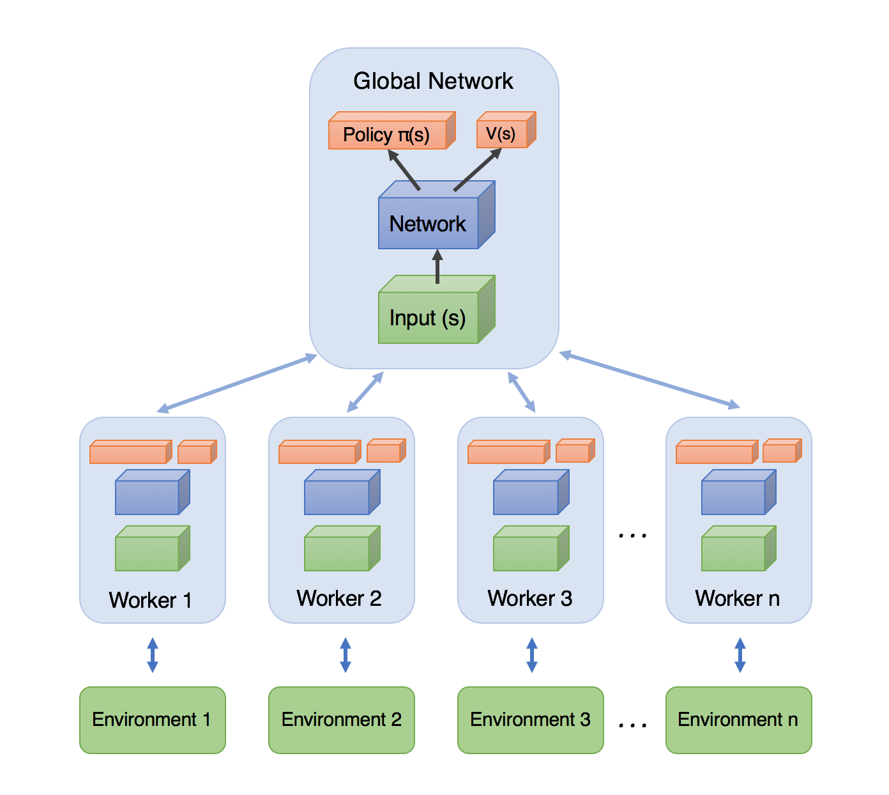
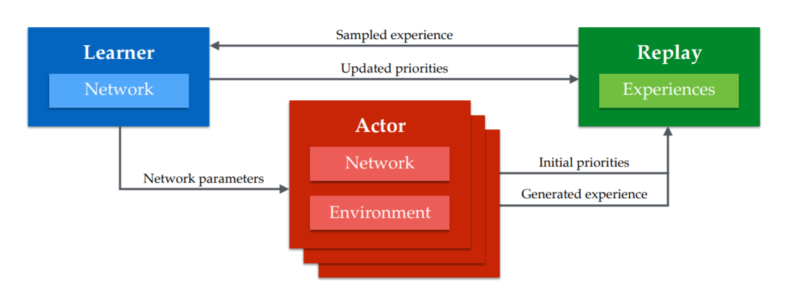

Each rollout worker (actor) starts an episode in a different state: at any point of time, the workers will be in uncorrelated states.
From time to time, the workers all send their experienced transitions to the learner which updates the policy using a batch of uncorrelated transitions.
After the update, the workers use the new policy.
Distributed RL

Distributed RL
Initialize global policy or value network \theta.
Initialize N copies of the environment in different states.
while True:
for each worker in parallel:
Copy the global network parameters \theta to each worker:
\theta_k \leftarrow \theta
Initialize an empty transition buffer \mathcal{D}_k.
Perform d steps with the worker on its copy of the environment.
Append each transition (s, a, r, s') to the transition buffer.
join(): wait for each worker to terminate.
Gather the N transition buffers into a single buffer \mathcal{D}.
Update the global network on \mathcal{D} to obtain new weights \theta.
Distributed RL for value-based networks (DQN variants)
Distributed learning can be used for any deep RL algorithm, including DQN variants.
Distributed DQN variants include GORILA, IMPALA, APE-X, R2D2.
“All” you need is one (or more) GPU for training the global network and N CPU cores for the workers.
The workers fill the ERM much more quickly.

Distributed RL
In practice, managing the communication between the workers and the global network through processes can be quite painful.
There are some frameworks abstracting the dirty work, such as RLlib.
Both the actor and the critic are trained on batches of transitions collected using parallel workers.
Two things are different from the general distributed approach: workers compute partial gradients and updates are asynchronous.
A3C: Asynchronous advantage actor-critic
def worker(\theta, \varphi):
Initialize empty transition buffer \mathcal{D}. Initialize the environment to the last state visited by this worker.
forn steps:
Select an action using \pi_\theta, store the transition in the transition buffer.
for each transition in \mathcal{D}:
Compute the n-step return in each state R^n_t = \displaystyle\sum_{k=0}^{n-1} \gamma^{k} \, r_{t+k+1} + \gamma^n \, V_\varphi(s_{t+n})
Compute policy gradient for the actor on the transition buffer: d\theta = \nabla_\theta \mathcal{J}(\theta) = \frac{1}{n} \sum_{t=1}^n \nabla_\theta \log \pi_\theta (s_t, a_t) \, (R^n_t - V_\varphi(s_t))
Compute value gradient for the critic on the transition buffer: d\varphi = \nabla_\varphi \mathcal{L}(\varphi) = -\frac{1}{n} \sum_{t=1}^n (R^n_t - V_\varphi(s_t)) \, \nabla_\varphi V_\varphi(s_t)
returnd\theta, d\varphi
A2C: global networks
Initialize actor \theta and critic \varphi.
Initialize K workers with a copy of the environment.
The previous slide depicts A2C, the synchronous version of A3C.
A2C synchronizes the workers (threads), i.e. it waits for the K workers to finish their job before merging the gradients and updating the global networks.
A3C is asynchronous:
the partial gradients are applied to the global networks as soon as they are available.
No need to wait for all workers to finish their job.
As the workers are not synchronized, this means that one worker could be copying the global networks \theta and \varphiwhile another worker is writing them.
This is called a Hogwild! update: no locks, no semaphores. Many workers can read/write the same data.
It turns out NN are robust enough for this kind of updates.
A3C: asynchronous updates
Initialize actor \theta and critic \varphi.
Initialize K workers with a copy of the environment.